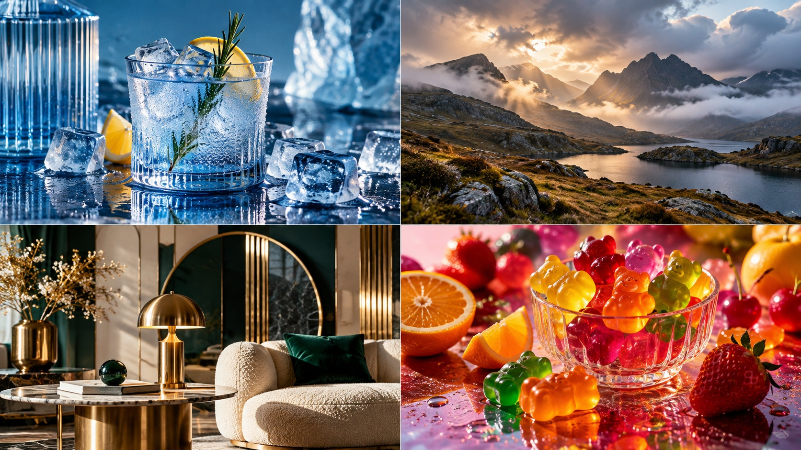

SHORTPROMPT / VISUAL LAB
2026 TREND TEST · 01/04
SOCIAL PHOTO TRENDS
4 AI PHOTO TRENDS TO TRY IN 2026
We checked Pinterest's 2026 trend signals, then turned four aesthetics into visual experiments.

TREND TEST
NO HUMAN FACES · OBJECTS · LANDSCAPES · INTERIORS
REAL TREND SIGNALS · AI VISUAL EXAMPLES
FOLLOW FOR THE FULL PROMPT PACK